작업 흐름
- 입력
- 주제 하나 (동네 골목, 시골 역, 상점 통로, 부두, 복도 …)
- 브리프
- 장소와 긴 축, 축 끝의 주인공, 평면에서 하나로 겹치는 반복물, 히어로 오브젝트, 깊이를 바꿀 물건 3–6개, 햇빛, 팔레트
- 장면
- 미터 단위 부품 키트로 짓는 3D 장소, 샷 키 { x, y, zf, W, fov, H, el, yaw, lay, cs }와 하나의 단조 3차 곡선 타임라인
- 검사
- 평면으로 시작, 평면일 때만 바뀌는 배치, 망원 → 광각 짝의 코너 시점, 이음매, 결정성, 평면 화면 밀도, 깜빡임 지도
- 출력
- 1920×1080 MP4(30 · 60 fps), 스크럽되는 라이브 페이지, BRIEF.md
cd perspective-illusion/examples/country-platform
node ../../scripts/check.mjs index.html
node ../../scripts/render.mjs index.html --sheet --scale .4
node ../../scripts/render.mjs index.html --preview
node ../../scripts/render.mjs index.html
node ../../scripts/blink.mjs out/scene.mp4
node ../../scripts/new-scene.mjs ~/my-loop # 새 루프요구 사항: Node + Playwright Chromium, ffmpeg. npm 설치, GPU, API 키는 필요 없습니다. 단계별 순서는 SKILL.md에 있습니다.
샘플
예제와 템플릿의 샷별 장면입니다. 같은 장소가 평면 그림에서 입체로 열리는 순서대로 놓았습니다. 카드를 누르면 라이브 데모가 그 순간에서 열립니다.
Country Platform 예제 · 솔내역 · 10초
원본에 없는 주제로 만든 예제입니다. 섬식 승강장, 지붕 기둥, 전차선 철주, 기다리는 열차, 육교가 한 장의 정면도처럼 보이다가, 승강장 끝에 한 줄로 서 있던 노란 “발밑 주의” 판 네 개가 사실은 승강장을 따라 비스듬히 놓여 있었음을 드러냅니다.
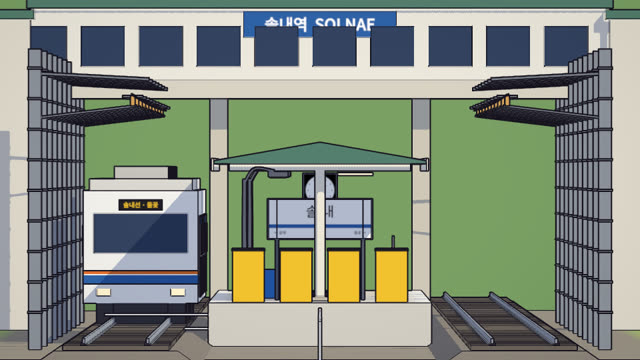
평면 · 0.3초한 장의 정면도화각 1.5°, 약 650 m 거리: 기둥과 철주가 하나로 겹침
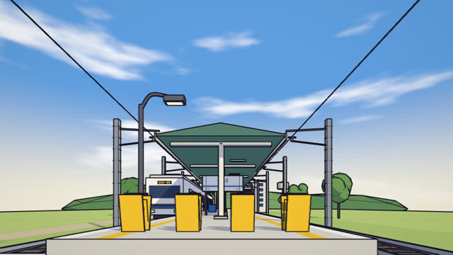
무릎 높이 · 1.6초돌리 줌으로 열린 깊이화각 86°, 지평선을 낮게 둔 렌즈 시프트
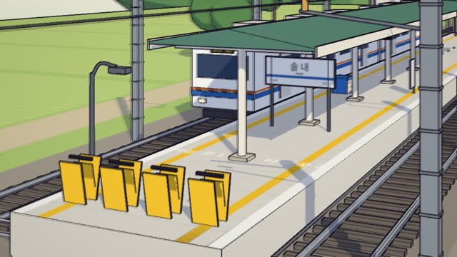
코너 A · 3.4초열차 반대쪽으로yaw 26°, 망원으로 평면처럼 보인 뒤 광각으로 열림
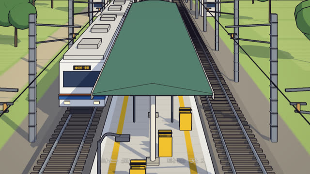
조감 · 5.6초줄은 대각선이었다평면일 때 lay 0 → 1: x는 그대로, z만 3.2 m씩 뒤로
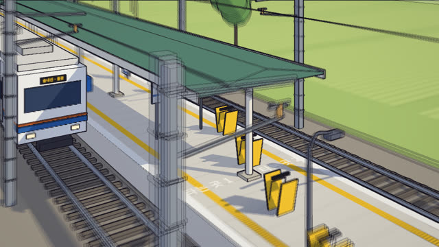
코너 B · 7.6초열차 너머로yaw −34°, 22° 내려다봄
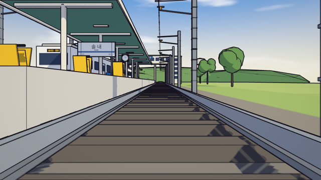
낮은 시점 · 8.4초선로 위에서이 장소에 맞춰 더한 샷, 다시 평면으로 돌아가 이음매 없이 반복
Corner Street 템플릿 · 오후의 뒷골목 · 10초
새 루프의 출발점입니다. 전봇대와 전선, 횡단보도, 끝의 서점, 오른쪽에 선 밴, 연석에 한 줄로 놓인 꼬깔 다섯 개.
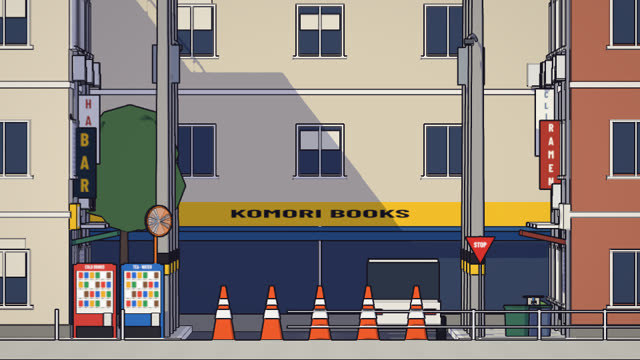
평면 · 0.3초서점이 있는 정면도60 m 깊이의 골목이 한 장의 그림으로
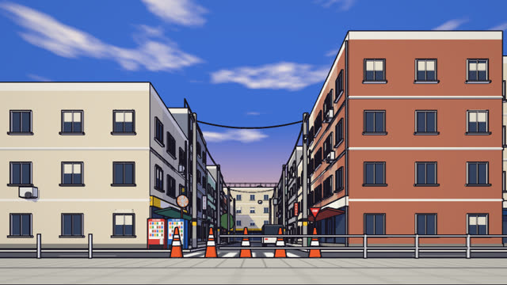
무릎 높이 · 1.6초서점은 50 m 뒤돌리 줌: 앞은 그대로, 뒤가 늘어남
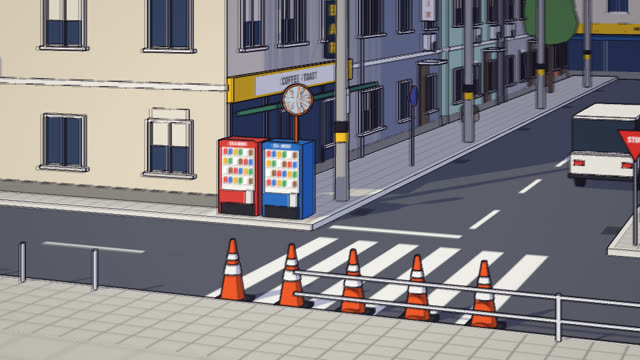
코너 A · 3.4초밴 반대쪽 모퉁이yaw 22°, 건물 옆면 · 에어컨 실외기 · 세로 간판
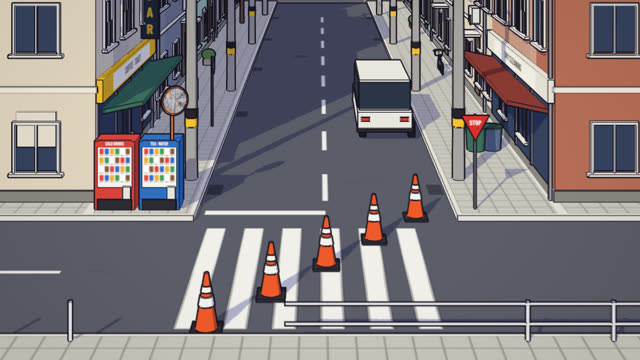
조감 · 5.6초꼬깔은 대각선이었다그림자 속에만 세계에 고정된 해칭
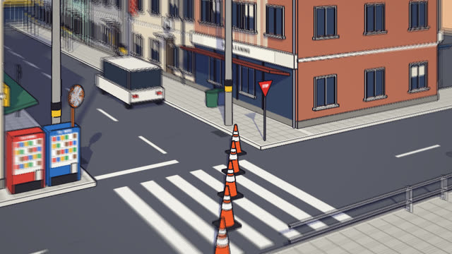
코너 B · 7.5초밴 쪽 모퉁이yaw −32°, 20° 내려다봄
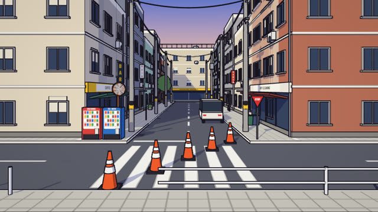
낮은 시점 · 8.4초다시 평면으로평면 유지 중 꼬깔이 줄로 돌아가고 루프가 이어짐
실제 작품
이 스킬은 simcraft의 perspective-illusion 스킬을 보고 만들었습니다. 원본 레포에 라이선스가 없어 코드와 그림은 가져오지 않았고, 샷 키 · 타임라인 · 선화 패스 · 렌더 계약 · 깜빡임 검사 같은 기법을 새 코드로 다시 짓고 장면은 모두 새로 설계했습니다. 같은 착시를 파스텔 장난감 마을로 만드는 자매 스킬은 parallax-facade입니다.
링크
- SKILL.md 워크플로
- 폴더 lib · scripts · references · templates · examples
- README.md 빠른 시작
- references/BRIEF.md 고정되는 것과 주제마다 설계하는 것, 스틸 검토 기준
- references/CAMERA.md 샷 키, 샷 어휘, 루프, 타이밍, 평면일 때의 속임수
- references/LOOK.md 패스, 잉크 선, 두 단계 음영, 해칭, 하늘
- references/KIT.md 엔진과 키트 API, 페이지 계약
- references/LESSONS.md 겪은 문제와 해결